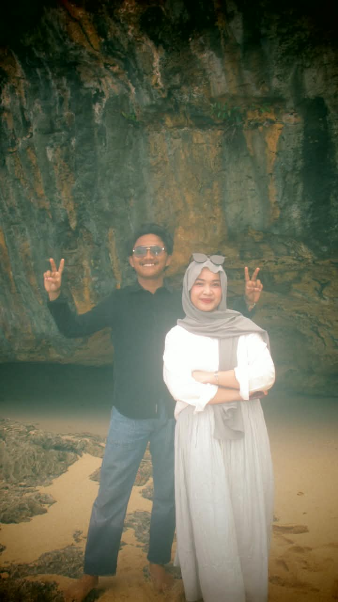
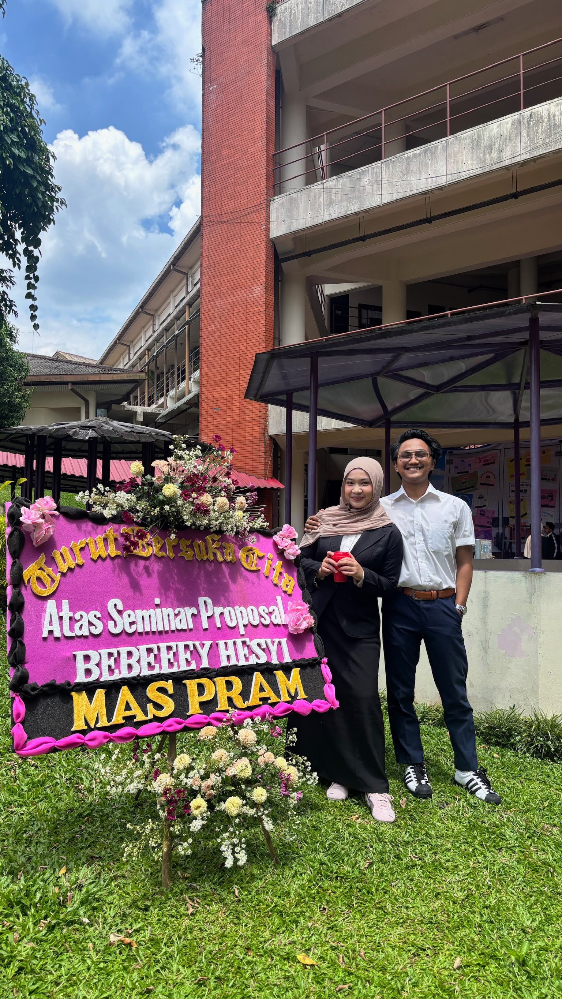

Dari Mas untuk Kamu


Selamat ulang tahun, sayang. Seseorang yang kehadirannya selalu kusemogakan di setiap waktu. Kamu bukan sekadar seseorang yang singgah di dalam hidup saya, melainkan alasan utama mengapa saya belajar memahami arti sabar, tulus, dan pulang. Menjalani hari bersama denganmu memberikan arti baru tentang bagaimana rasanya merasa cukup. Semoga segala hal yang sempat membuatmu merasa jatuh dan lelah di luar sana, pada akhirnya justru membentuk dirimu menjadi pribadi yang semakin utuh. Mas tau proses pendewasaan tidak pernah berjalan mudah. Ada masanya ketika pikiran kamu berantakan dan beban terasa begitu berat di pundakmu. But, look at ur self rn, you already melangkah sejauh ini dan bertahan dengan begitu hebat.
Semoga segala doa dan harapan yang diam-diam kamu kirimkan ke langit senantiasa didengar dan dijawab oleh Sang Pencipta, membawa hidup kamu dan saya jauh dari kita sulit. Semoga hari-harimu ke depan selalu dihadapkan dengan kejadian-kejadian membahagiakan, agar hatimu tidak sempat porak-poranda oleh kesedihan. Kalaupun suatu hari badai datang menerpa, saya ingin kamu ingat bahwa selalu ada tempat untuk bersandar, ada saya yang siap mendengar segala keluhmu tanpa syarat. Di umur yang baru ini, semoga kamu selalu bisa mengukir banyak mimpi baru di masa depan, memiliki keberanian untuk meraihnya satu per satu, dan tidak pernah merasa sepi karena Mas akan selalu ada di sampingmu. Perjalanan yang kita tempuh selama ini mungkin tidak selalu seindah khayalan, ada kalanya rencana kita diuji oleh waktu dan keadaan. Namun, selama tangan kita masih saling menggenggam, Mas yakin kita bisa melewatinya semuanya.
Jika diberi satu kesempatan untuk didengar, Mas ingin menceritakan betapa saya mengagumi caramu berbicara. Tentang bagaimana saya bisa duduk terpsaya sepanjang malam, hanya untuk menikmati setiap kata yang keluar dari bibirmu. Seandainya bisa, ingin kutinggalkan catatan kecil di saku kananmu, agar kamu tahu betapa berharganya dirimu, baik bagi orang lain maupun bagiku. Sederhana saja, saya ingin berterima kasih karena selalu meluangkan waktu untuk berbincang dan tertawa bersama saya.
Di umur baru ini, semoga kamu senantiasa diberikan nikmat panjang umur dan kebahagiaan supaya makin banyak orang yang kenal dan merasa bangga pernah mengenalmu. Semoga kamu selalu dilimpahi kemudahan serta kelancaran dalam setiap langkah dan urusan, agar kamu bisa terus menjadi jalan kebaikan bagi orang-orang yang membutuhkan bantuan. Semoga rezekimu mengalir deras tanpa putus, memberimu kesempatan untuk berkelana menjelajahi banyak tempat baru yang pada akhirnya juga membawa keberkahan serta rezeki bagi makhluk Tuhan lainnya di sekitarmu.
Semoga langkah kaki yang kamu pilih selalu berada dalam lindungan-Nya, dijauhkan dari marabahaya dan dari segala rasa yang sempat memberatkan hatimu. Semoga kamu tak pernah sekalipun merasa sendirian saat menghadapi rumitnya dunia, sebab ada banyak doa yang dengan tulus memelukmu dari jauh. Setiap lelah yang kamu rasakan, setiap peluh yang kamu tetaskan, dan setiap impian yang diam-diam sedang kamu perjuangkan, semoga perlahan-lahan menemukan jalan terangnya. Semoga kesehatan fisik, kedamaian pikiran, dan kelapangan dada selalu menjadi bagian dari keseharianmu. Di tengah riuhnya kehidupan, semoga kamu tak pernah kehabisan energi untuk menyebarkan kebaikan. Semoga kamu tidak ada capeknya untuk terus membantu dan bersamai aku serta temanteman lainnya selagi kita masih diberi kesempatan untuk bernapas di bumi ini.
Terakhir, dari sekian banyak pinta dan harapan yang tak henti-hentinya aku panjatkan untukmu, semoga kelak kamu bertumbuh menjadi sosok istri dan Ibu yang penuh kasih, bijaksana, serta membawa kehangatan yang tak terhingga bagi keluarga kita. Semoga kehidupan yang kamu jalani ke depan selalu dipenuhi oleh tawa, kedamaian, dan keberkahan yang tak pernah usai. Tuhan yang Maha Baik pasti telah menyiapkan rencana terindah untuk kita berdua di waktu yang tepat. Sampai ketemu di hari-hari baik itu, di mana segala lelah terbayar lunas oleh senyum kemenangan kita. Jangan capek untuk melangkah bersama yaa sayang, semoga di umur baru juga bisa saling menguatkan dalam kondisi apa pun. Sekali lagi, selamat bertambah usia, Hersya Assyifaa Amanda. Semoga sisa umurmu diberkahi kebahagiaan yang melimpah.
- Prama, with love ❤️